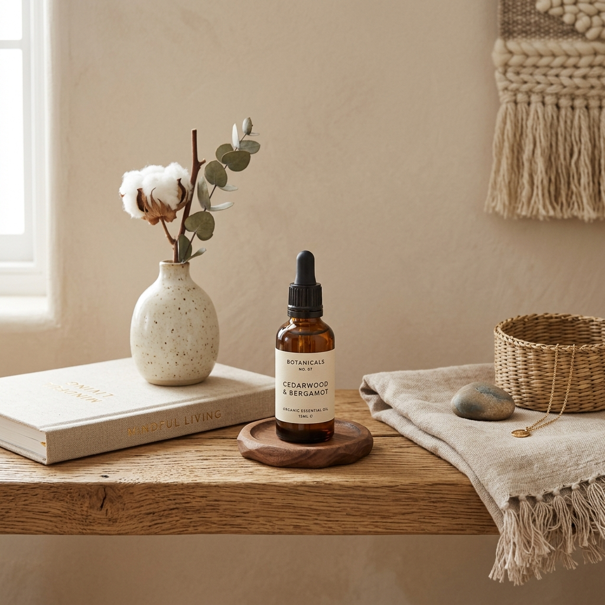

Crafting a life of beautiful essentials.
Zai Essentials was founded on a simple realization: the objects we touch every single day should bring us peace, health, and clean wellness. We believe that everyday essentials shouldn't compromise on purity, aesthetics, or ethical standards.
Each item in our catalog is hand-selected by Zai. From organic beeswax food wraps that replace plastic wraps to pure botanical rose water mist, we provide high-end, cruelty-free alternatives that align your home and skin routines with nature.

Our Core Standards
We source every single ingredient and product transparently, ensuring they meet the highest global sustainability guidelines.
Ethical Sourcing
We build direct partnerships with organic family farms, paying fair prices and supporting local communities.
Pure Formulas
Absolutely no parabens, phthalates, synthetic fragrances, or fillers. Just botanical and natural goodness.
Conscious Shipping
Our orders are packed in biodegradable starch sleeves and cardboard using soy-based waterless inks.